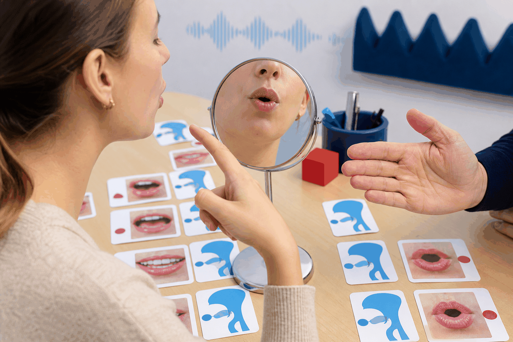

Articulation
La bouche travaille autant que l’oreille
Les sons français demandent de contrôler l’arrondissement des lèvres, l’ouverture de la bouche, la nasalité, la tension des voyelles et la continuité entre les mots.
Un atelier complet pour comprendre comment le français se prononce : voyelles, combinaisons de lettres, nasales, consonnes, lettres muettes, liaisons, enchaînement, e caduc, rythme et différence entre futur et conditionnel.

Articulation
Les sons français demandent de contrôler l’arrondissement des lèvres, l’ouverture de la bouche, la nasalité, la tension des voyelles et la continuité entre les mots.
Carte générale
La phonétique française ne se limite pas aux lettres. Une même lettre peut changer de son selon sa position, et plusieurs lettres peuvent créer un seul son. Le français parlé relie aussi les mots : c’est pour cela que la phrase sonne comme un groupe musical, pas comme une suite de mots isolés.
Système phonétique
Chaque module s’ouvre dans cette page. Les boutons audio utilisent la voix française du navigateur quand elle est disponible ; si aucune voix française n’est installée, le contenu écrit reste complet.
Prosodie
Le français est une langue à accent de groupe. L’accent principal tombe généralement sur la dernière syllabe prononcée d’un groupe rythmique : Je voudrais parler / avec le directeur / demain matin. Les syllabes sont plus régulières qu’en anglais ou en espagnol : il faut éviter de trop allonger une syllabe au milieu du groupe.
Distinction fine
À l’écrit, la différence est claire : -ai au futur, -ais au conditionnel. À l’oral, beaucoup de locuteurs prononcent le futur avec un son plus fermé /e/ et le conditionnel avec un son plus ouvert /ɛ/. Selon les régions, cette opposition peut être moins marquée ; le contexte grammatical reste donc essentiel.
Futur
Valeur : action certaine ou prévue. Terminaison écrite : -ai. Prononciation souvent proche de /paʁləʁe/.
Conditionnel
Valeur : hypothèse, politesse, souhait. Terminaison écrite : -ais. Prononciation souvent proche de /paʁləʁɛ/.
Synthèse
Travaillez une seule catégorie à la fois : d’abord écouter, puis observer la bouche, répéter lentement, répéter dans une phrase, et enfin comparer deux sons proches. L’objectif n’est pas de mémoriser tous les symboles IPA, mais d’apprendre à relier une graphie, un geste articulatoire et un son réel.